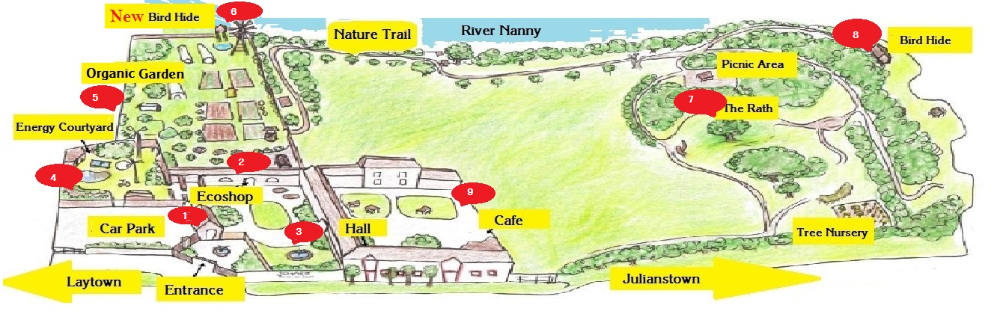

Sonairte
Sonairte is an interactive visitor centre promoting ecological awareness and sustainable living, serving and growing with the local community for over 25 years.
Sonairte is a great place for a day out for all the family strolling the Walled Organic Garden, exploring the Nature Trail, or having a picnic in the garden or on the banks of the Nanny River. You can visit the Information Centre, follow the Heritage Trail or call into the Bee Museum and there are also courses that can be booked in organic gardening or sustainable living. Or you can simply listen to the birdsong on the Rath and marvel at the biodiversity of woodland, meadow and marshes contained within Sonairte's 10 acre site.
Sonairte is an important resource for Active Retirement Groups who can come and avail of our organic gardening and arts courses but all ages can come and enjoy a green day out.
The Sunflower Cafe serves delicious eat plot to pot meals and a selection of cakes, teas and coffees and in the Eco Shop you'll find a wide selection of Irish and Fair Trade gifts and foodstuffs.
Entry to Sonairte is free. Opening times Tuesday to Sunday 10:30 a.m. - 5:00 p.m.